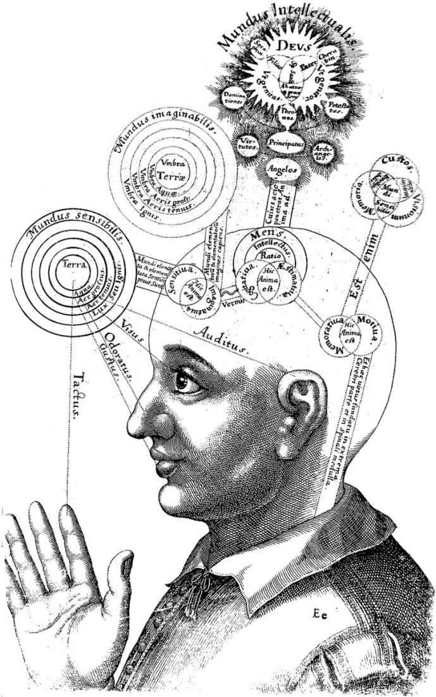
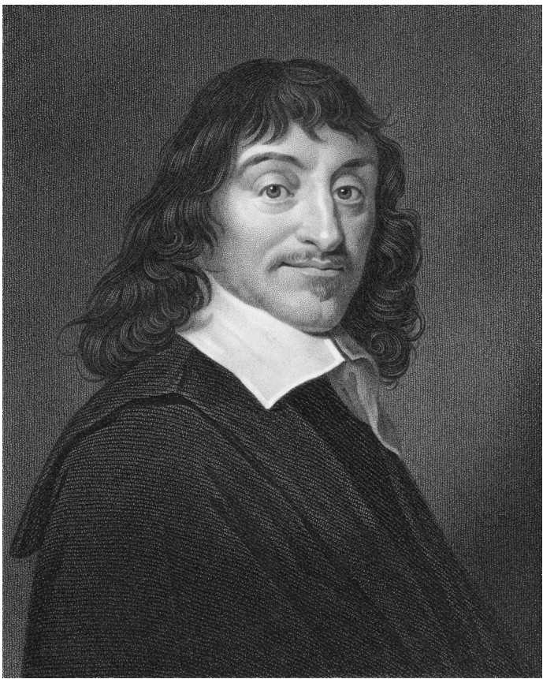
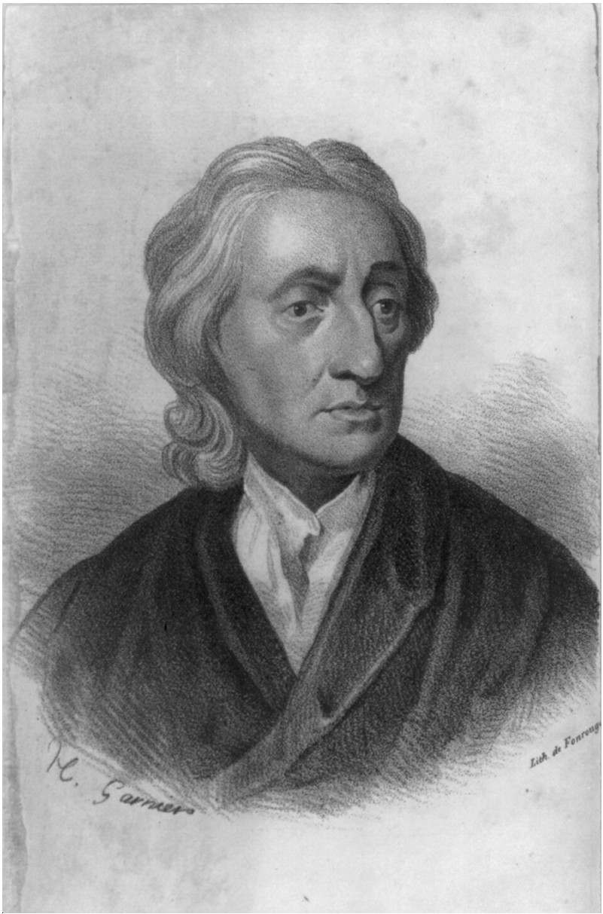

第三章
理性主义与经验主义
近代早期
在文学、音乐和建筑等许多领域里，“现代”（Modern）这个标签只能延伸到20世纪的早期。而哲学却与众不同，它的近代（Modern）时期早在400多年前就开始了。[1]哲学的这种特殊性是由于16世纪人们对自然的理解发生了翻天覆地的变化，这场巨变同时也使得我们对知识本身的理解发生转型。在这条线索上，近代意义上的思想家可以追溯到伽利略·伽利雷（1564—1642），他投身于与我们今天非常相似的研究计划。如果我们回望近代之前的时期，我们会发现很多异乎寻常的事情：那时人们对于自然如何运行，以及自然如何能被认识，还存有很多与今天非常不同的观点和看法。
举一个近代之前奇特思维方式的例子，尝试理解一下文艺复兴时期的思想家帕拉塞尔苏斯（1493—1541）的下述论断：
整个世界围绕着人，就像圆围绕着圆心。由此可知，所有事情都与这一点有关，正像一颗苹果种子，被它外围的果实所紧紧围绕和保护着……天文学理论通过研究行星与恒星而理解的所有事情……也都可以应用到身体的宇宙之中。
这位传统的思想家把宇宙看作围绕人的东西，试图通过发现宇宙与我们之间的类比关系，来获得有关自然的知识。这也就是把实在看作我们在心灵中创作的带有象征意味的艺术作品。（见图3）
到了16世纪，这种把人视作所有存在物中心的观点受到了严重的挑战，主要是来自一些尚未得到解释的发现，尤其是尼古拉·哥白尼（1473—1543）的主张，即地球实际上并不是宇宙的中心。旧传统试图阻止新观念的产生。例如，伽利略发明的望远镜发现了木星有几颗卫星，而守旧的传统学者弗朗西斯科·希兹却论证说，那些观察结果显然是错的。按照希兹的观点，既然动物的头上都只有七个孔（两只眼睛，两只耳朵，两个鼻孔和一张嘴），金属只有七种，一周也只有七天，那么同样地也就不可能存在多于七个“漫游的行星”，或是任何除了恒星以外的天体。
希兹并没有赢得论辩的胜利。这当然并不只是说我们相信伽利略是对的，即太阳系中有超过七颗星体在运转。更为根本的是，我们对自然和知识采取一种完全不同的思维方式。我们不再期待自然事实有任何特殊的人类意义——譬如，“为什么行星必须只是七个而不能是八个或十五个？”这样的问题。同时，我们也认为知识应当从对自然做系统的、持开放态度的观察中获得，而不是像希兹那样，求助于任何类比和模式。然而，向近代的转型并非易事。近代之前盛行的这种模式导向的思维方式，自然对像我们这样寻求意义的生物充满着吸引力。这样的思维方式也可以在不同的文化中找到。例如，在中国传统思想中，金木水火土的“五行”就对应着五种感觉，这也是在人类的内在领域与外部世界之间构建的类似对应。并且，更有吸引力的一点是，这种近代之前的观念还很容易适应我们日常的感觉经验：不加反思的话，地球的确看起来是固定不动的，而太阳却每天在空中东升西落。而你要说服自己相信一个数学上更简单的模型——譬如以太阳为中心的太阳系模型——才是正确的，反倒要花很多工夫去证明。

图3 帕拉塞尔苏斯主义关于人与宇宙关系的观点
在短暂的文艺复兴时期，新旧两种思维方式彼此博弈，争夺主导权。正是两者的对抗让不少哲学家倒向了怀疑论的立场。旧理论把地球置于宇宙的中心，新观念则要使地球围绕太阳运转。正是看到了这两种观点的激烈碰撞与冲突，蒙田才下决心主张说，唯一明智的道路是不支持其中任何一种观点。但也并非所有哲学家都乐意置身事外，其中的一些人就选择为新的科学思维方式而战。
勒内·笛卡尔的理性主义
笛卡尔（图4）1596年出生在法国，接受的是传统的耶稣会教育，专心研究亚里士多德及其中世纪阐释者们的古典思想。当他后来接触到研究自然的新兴道路时，他才对自己曾经在学校里学到的东西有了新的反思。他的《第一哲学的沉思》（以下简称《沉思》）开头即坦承，自己从孩童时代起就摄入了“非常多的虚假观念”。他接着写道：“我意识到如果我还想在学问上有任何建树，并且能够稳定而持续下去的话，我就有必要在我的生命里彻底地摧毁所有自己相信的东西，从基本的东西重新开始。”笛卡尔在《沉思》中提出的摧毁性纲领就是第二章提到的系统性怀疑论的方法，从对错觉经验的微小怀疑出发，最终上升为一个彻底怀疑所有外部世界的恶魔图景。这一图景出现于笛卡尔书中写到的第一个沉思末尾，作者宣称他已经成功地把所有固定的观念擦除干净了：他已经怀疑了所有先前自己持有的观念。

图4 勒内·笛卡尔，1596—1650
在第一个沉思之后的五个沉思，都致力于仔细地重建一种新的世界观，笛卡尔希望为此提供不可撼动的牢固根基。第一个能够确定无疑知道的真理乃是我们自己的存在：无论是否有一个恶魔一直在欺骗你，至少有一个事实你是不可能被欺骗的，那就是你自己的存在，你是一个思考着的存在者，在你思考自己的时候你就是存在的。到这一步是没什么问题。但如果“我存在”只是用来支持其他知识的非常单薄的基础，笛卡尔采用了一个有意思的窍门，试图从中得到额外的收益。他在第三个沉思中提出了一个反思性的追问：究竟是什么使他知道了这第一个事实？他说，那只能是“对我所断言之事的清晰而明确的知觉”。如果这是对的，那么我们就应该可以信任这样一条法则：“凡是清晰而明确的东西即为真”——笛卡尔推论说，因为如果这条法则是可错的，我们甚至就没有办法主张知道我们自己的存在。第三个沉思于是就大胆地为这条普遍法则辩护。
由于笛卡尔只确立了他自己的存在，所以他能用上的资源实在有限。但他继续考察自身，于是发现在他的心灵中有着各种各样的观念，因而他就开始清点这个观念仓库的存货。笛卡尔没有去考察自己的观念是否都反映现实，而是注意到他的这些观念之间存在着显著的差异。它们所表征的对象类型不同，有天使、人类、太阳、天空和上帝等等；从表面上看，它们也有着不同的来源。有的来源于外部对象，譬如相信壁炉能取暖的观念；有的则似乎是被发明出来的，譬如他对一种希腊神兽的观念，那是一种有着鹰的脑袋的飞马；而还有一些则似乎是被植入到他头脑里的观念，或者说是与生俱来的，譬如关于真理的观念。只要笛卡尔还有恶魔图景的顾虑，怀疑有个恶魔在任何情况下都会欺骗他，那么他就不可能确信自己的观念真的具备它表面上的来源。但笛卡尔最终发现了往前更进一步的道路，认识到那些表面上看似不同的观念实际表征的是更大更少的东西。在所有观念之中，有一个观念居于其他观念之首，即他对上帝的观念，对一种无限完满存在的观念。笛卡尔推论说，完满的观念不可能从任何不完满的来源中获得，所以它必然只能来自上帝，而且必须是天赋内在的，是我们与生俱来的观念。笛卡尔之所以能从上帝的观念来论证上帝的存在，其实是借助了一个因果原则：即便是纯粹观念上的完满也不可能由任何不完满的来源所导致，而并非所有读者都会完全信服这一原则。但是，一旦确立了上帝的存在，笛卡尔就很快转而论证说，我们所有清晰而明确的观念——譬如对真理、数字和纯粹几何形式的观念——都是天赋观念，完全值得信赖。因为，完满的因此也是仁慈的上帝不会把任何欺骗性的观念赋予我们的头脑。
如果我们那些清晰而明确的天赋观念都是绝对可靠的，那么我们何以还会犯错误呢？显然我们经常出错，所以要解释这一点就成为有意思的问题。笛卡尔的下一个任务，就是要把错误的来源与我们那些值得信赖的清晰明确观念区分开。笛卡尔说，我们的有些观念乃是模糊而非清晰、混乱而非明确的。那些朴素的感觉经验具有一定的意义，例如饥饿、口渴，或是某些对颜色与气味的感觉，但这些观念并没有向我们展示事物自身具有的真实本质。譬如，在昏暗的光线中，你可能搞错了某个东西的颜色，因为颜色的观念并不清晰而明确。相反地，你对数字5或三角形的观念却是清晰且明确的，因为它们不会不向你展示其所表征对象的内在本质：你完全不用担心对数字5的观念错误表征了那个数。这里笛卡尔实际上回应了斯多葛学派的思路，主张如果我们基于那些模糊且混乱的观念做出判断，那么我们就不得不面临出错的风险；而只要我们坚持立足于那些清晰且明确的观念，我们就不可能出错。所以，如果我们想要获得关于像颜色和气味这样混乱的事物的知识，那么我们就应该以明确的数学或几何术语去分析它。这其实正是我们现代人做的事情，我们用分子的形状来解释气味，用可测量的光的波长来解释颜色。
这就是所谓的理性主义观点，它把抽象的概念置于寻求知识的核心。笛卡尔对代数和几何都做出了很大的贡献，特别值得一提的是在几何学上还发展了笛卡尔坐标系。所以他也非常坚持用数学工具分析自然这一现代性的事业。然而，在解释人类错误的来源方面，笛卡尔仍然面临着诸多困难。这种困难恰好来自他对下述主张的依赖：我们的天赋理智结构来自某个完满的上帝。在第四个沉思中，笛卡尔主张上帝不应该为我们的错误负责，因为这些错误乃是我们自由的后果——具体说来，就是人们自由地接受了某些不那么清晰与明确的观念。自由当然不是什么坏事，如果它被滥用，那也是我们的过错，不关上帝什么事。然而，在这一点上仍然存在一个谜团：为什么上帝在给予我们极好且完全精确的数学抽象观念之外，还要赋予我们一些模糊与混乱的身体感觉呢？直到他的第六个也是最后一个沉思中，笛卡尔才解决了这个与我们的感觉相关的困难课题。
笛卡尔指出，我们的心灵有着诸多能力，既有理智又有想象力。我们的理智负责代数或演绎几何学等抽象操作，而想象力则与此完全不同。为了领会两者之间的差异，笛卡尔要求读者思考一个千边形——一个有着1000条边的几何图形。从理智上说，你完全可以做到这一点，能看出千边形和1001条边的几何图形间的不同，你也能在正确公式的引导下做计算，得出结论说千边形的内角和等于1996个直角的度数。但是，从想象力上说，情况就困难多了：笛卡尔这样预测，假如你想要想象出千边形究竟是个什么模样，你肯定会得出某些非常混乱的结果，譬如得出了某个有许多条边的图形，又很难与其他也有很多条边的图形区分开。于是，笛卡尔的结论是，想象力并不只是从理智中读取那些清晰而明确的观念，而是导向了其他的东西——身体性的感觉。
笛卡尔最终的结论是，我们的感觉及与之相关的想象力，目的并不在于向我们展现事物自身的本质，那其实是理智的任务；相反地，感觉服务于身体与灵魂。我们对饥饿、疼痛、气味和颜色的感觉帮助我们的机体正常生存，这本身当然也是仁慈的上帝希望保全的东西。如果我们时刻想着，感觉并不是用来展现事物真实本质的，那么我们就能够避免感觉的误导。确切地说，感觉所提供的东西应该根据我们清晰而明确的观念做出检验与解释。通过观察经验中的一致性与融贯性，我们就能够区分真实的经验与非真实的梦境，尤其又因为一个仁慈的上帝不会愿意让我们终生深陷于梦境之中。如果我们能够小心地协调运用心灵的各种能力，让我们混乱的感觉从属于天赋理性的规训，那么知识就会是可能的。
笛卡尔对于自己的理性主义体系非常乐观，在其前言中主张自己的论证“乃是这样的类型：我认为任何人类的心灵都不可能再发现有比它更好的了”。然而，他的这种热情并未得到广泛的认同。很少有批评者怀疑他对自我存在的确定性主张，然而除此之外，他的论证遭到了非常多的反驳。神学家安东尼·阿诺德立即指出，笛卡尔在第三个沉思中的论证存在某个循环：当他要论证“清晰而明确的观念是值得信赖的”时，他的论据仍然来自那些清晰而明确的观念。这个问题后来也被称作“笛卡尔主义循环”，直到今天仍然有损于笛卡尔在哲学家中的声誉。波希米亚公主伊丽莎白指出，对于理智的灵魂如何能够与物质的身体交互作用的问题，笛卡尔远远没有给出令人满意的答案。英国哲学家托马斯·霍布斯追问笛卡尔：“天赋观念”究竟是怎样起作用的？最后这一批评被另一位英国哲学家约翰·洛克（1632—1704）往前大大推进了一步。
约翰·洛克的经验主义
当洛克（图5）还是牛津大学一名人文学科的本科生时，他也研读了一些传统哲学的内容。但只有到毕业多年以后，他读到笛卡尔的新哲学时，才真正对这一主题产生了兴趣。洛克兴趣广泛，除了知识论以外，他还研习医学，更是一名成功的政府官员。但就是在这诸多兴趣和追求之中，洛克坚持发展了一种与笛卡尔相对立的知识理论，并花了二十年时间写作他的主要著作：《人类理解研究》（Essay Concerning Human Understanding，以下简称《研究》）。洛克在《研究》的导言中写道，此书的核心目标就是“厘清意见与知识的边界”。洛克相信，以他所谓“历史的平常方法”研究人类心灵的自然运作，就能够找出人类所能知范围的边界。他主张，在能知的边界之外，人类完全可以具有信仰或意见，但他们不会再有确定性，也不应该批判攻击那些持不同意见或信仰的人。（在洛克的计划中，支持宗教宽容乃是厘清知识边界的重要内容。）

图5 约翰·洛克，1632—1704
洛克用“历史的平常方法”来挑战理性主义者对天赋观念的诉求。回顾一下人们实际上是如何做出判断的，理性观念真的从一开始就在我们的头脑之中了吗？理性主义者主张说，某些原则基于全体人类，因而必然是天赋的。譬如，“存在者存在”，“同一个东西不可能既是这样又不是这样”，等等。但洛克基于自己对人类的观察提出了不同看法。“孩童当然知道某个陌生人不是自己的妈妈，知道奶瓶不是一根棍子，要远远早于知道‘同一个东西不可能既是这样又不是这样’，这难道还会有什么疑问吗？”所以，洛克非常反对说这些原则是孩童也具备的天赋观念，只不过还没有被注意到。他宣称，“如果说某些真理已经赋予灵魂之中，却未被感知或理解，那简直近乎于矛盾了”。如果说，“赋予灵魂之中”并不意味着灵魂觉察到了某些东西，那还能意味着什么呢？天赋观念论者试图主张，孩童只有能成熟地运用理性之后，才会认识到那些早已赋予在灵魂之中的真理。而洛克的反驳是，既然真理的发现需要运用理性能力，那么那种天赋的真理看起来纯属多余。这就好比是说，太阳也是上天赋予我们之中了，只不过它还需要视觉能力的发展，才可能被心灵注意到。
理性主义者主张心灵被预先设定了某些天赋观念，而洛克却主张我们最早具有的观念都来自感觉：在感觉开始标记之前，心灵就是一张“白纸”。在经历重复经验之后，孩童渐渐能够识别出物体与人，就是原初的“感觉观念”集合成了不同的模式。随着心智能力的发展，我们也就从对心灵自己运作的观察中发展出了洛克称为“反思观念”的东西。这样两个来源，一个是对外部对象的感觉，另一个是对心理活动的反思，就构成了人类获得简单观念的终极源头。在洛克看来，简单观念从这两个源头中形成，进而成为构成所有人类思想的最基本单元。这种以经验为中心解释知识的理论进路就是经验主义。
经验主义知识论虽然主张思想的原初材料来自经验，但它也为经过处理的其他材料预留了空间。譬如，我们先是接受了来自经验与反思的简单印象，然后以某种新的方式把它们联结起来，形成某些更为复杂、精致与抽象的观念，例如正义、财产和政府，或是幻想出某些虚构的生物以及新的发明，等等。一旦我们从更简单的成分中组合出了那些精致观念，我们也就能够具备关于它们的真理性知识。例如，洛克认为“无财产的地方也就没有不公正的情况存在”，这就是一个“具有欧几里得几何证明的那种确定性的命题”。如果你不能直接看出其中的缘由，这可能是由于你对“财产”和“不公正”的观念不同于洛克的观念。洛克把财产定义为“对任意事物的权利”，而把“不公正”定义为“对那种权利的侵犯与破坏”。所以，如果你按照他对这些术语的关键定义，你就很容易得出“无财产便没有不公”这样的结论。
当然，洛克也意识到，我们实际上并没有以相同的方式定义语词。正是由于人们常把不同的观念关联到所使用的语词之上，所以在道德与政治议题上才会产生那么多恼人的争论，而实际上这些争论并非真的出自观念上的深层差异。如果我们能够对自己所使用的语词意义有非常清晰的理解，譬如说能够把它们分解为更简单的词项，那么我们也就能够解决这些单纯的语词之争，从而能够达到更大的共识且获得更多的知识。
然而，即便我们非常小心而精确地定义了语词，我们也还是发现，知识是有边界的。洛克对知识的定义是：“对我们任何观念间的关联与一致，或分歧与矛盾的知觉。”观念间的一致或分歧可以有很多种方式：洛克称之为知识的“程度”。
最明确程度上的知识是直觉知识（intuitive knowledge），这也是我们对观念间的一致或分歧的直接把握。例如，“圆不是三角形”。稍微难一点的是演证性知识（demonstrative knowledge），心灵从中也看到了观念间的一致与分歧，但必须要借助于某种连接观念的链条：譬如，三角形的内角和等于两个直角，这个知识就是演证性的，因为它需要经过一系列证明步骤才能得出。
最弱程度上的知识被洛克称为感性知识（sensitive knowledge）。感性知识区别于其他知识的地方在于，它所呈现的并非观念间的普遍真理或关系，而是我们所体验到的具体对象的存在。按照洛克的观点，你对感觉对象的存在就具有感性知识，譬如，你现在正穿着的衣服。洛克称，如果你的确感受到了某个东西，你就会得到与仅仅是回忆到它或想象到它都不同的经验。譬如，你在白天真实地看到了太阳，而到了夜晚只能回想起太阳的样子，你完全不可能忽略两者之间的巨大差别。由于感性知识是把我们的观念关联到实在上，因而它似乎脱离了洛克的知识定义，因为按照定义知识只能是对观念间的一致与分歧的知觉。但是，只要我们还记得，观念也包括反思观念在内，由我们对心智运作本身的觉察产生，那么我们也就可以把感性知识看作对观念间一致性的感知。因为，在任何感性知识中，譬如你知道自己正穿着的衣服是存在的，你体验到你自己对衣服的感觉的心智运作，会区别于当你仅仅回想起或想象着自己穿着衣服时的心智运作。在真实的感觉中，你能识别出它与感觉观念的一致性，这是一种你在触碰面前真实存在的东西的观念，它远远不同于你对回忆或想象等心智运作的观念。
洛克并没有在回应怀疑论方面花费太多精力，而恰恰是怀疑论者会担心说当我们觉得自己有真实经验的时候其实并没有体验到实在。洛克不在意怀疑论，可能是由于他认为任何人都不可能做一个真诚的怀疑论者。洛克认为我们已经“不可改变地意识到了”我们所感知事物的实在性，最多只能假装对它持怀疑态度。同时，洛克非常强调知识对实践目标的意义：如果那些看似真实的东西已经真实到足以成为快乐与痛苦的可靠来源，那么你就能确定无疑地相信它的存在，而这完全就已经是你足以应付实践目标的信念程度。对洛克而言，知识归根结底是追求幸福的工具或手段。
但知识并非唯一的向导。洛克论证说，我们有很多行动并非由知识主导，而是由某些更弱的判断来主导。在他看来，判断并不会给我们任何确定性，但它仍然可以使我们主张某个论断很可能为真——并且，在众多情形中，这里的概率会足够高，能够使我们获得实践上的确定性。例如，我们从他人的证言中获得的信念，在洛克看来就只是某种判断，而并非真正的知识（这其实是一个很有争议的主张，我们会在第六章再次讨论它）。
洛克的经验主义与笛卡尔的理性主义都是在近代早期涌现出来的对自然新的思考方式，尽管它们分别强调了这一思路的不同侧面。笛卡尔侧重于数学与抽象观念的重要性，洛克则重点关注经验与观察的意义。既然这两位思想家都主张近代早期的新科学思想，为什么他们还会提出如此不同的知识理论？一种可能的理由是，他们是从不同的角度来批评知识问题的。在《沉思》中，笛卡尔采取了一种第一人称视角。他的问题是：“我能确切地知道什么？”从对自身存在的内在意识出发，笛卡尔通过其心灵的能力与内容逐渐向外扩展。从第一人称视角出发，最清晰的知识乃是那些完全不需要依赖于外部环境的知识：即便我们对外部世界缺乏确定性，我们依然能够对抽象观念的纯粹理性运作保持充分的信心。洛克也带有笛卡尔的这种内省性倾向，但他在很多论述中也同样愿意采取一种第三人称的视角，借用他对他人的观察结果。对洛克而言，要回答的最主要问题是：“人们究竟知道什么？”孩童如何认识到奶瓶与棍子的差异？从第三人称视角来说，我们自然地会承认，对奶瓶做出反应时，那个婴儿的确体验到了某个实在。因此，在第三人称观点中，感性知觉就是个人与其周边环境的关系，这构成了知识的自然基础。
当然，理想的知识理论是要能同时解释抽象的东西与观察性的东西，以及两者是如何配合的。而取得这一方向上的进步有赖于对第一人称与第三人称观点间联系的深层理解。这个主题在当代知识论中依然是非常活跃的研究方向，我们将会在第五章中详加讨论。按现在的术语来说，在第一人称与第三人称观点之间的选择，就是在“内在论”与“外在论”之间的选择。自1960年代以来，这一选择的重要性变得非常清晰，那时哲学家们正费力回应对知识概念的传统分析提出的挑战。